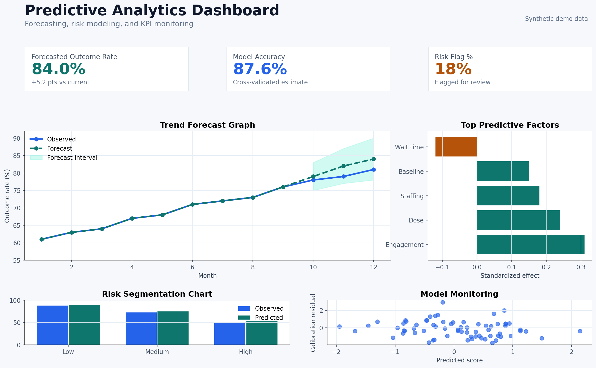
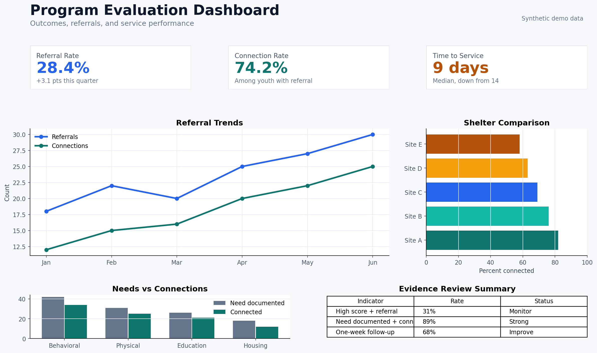
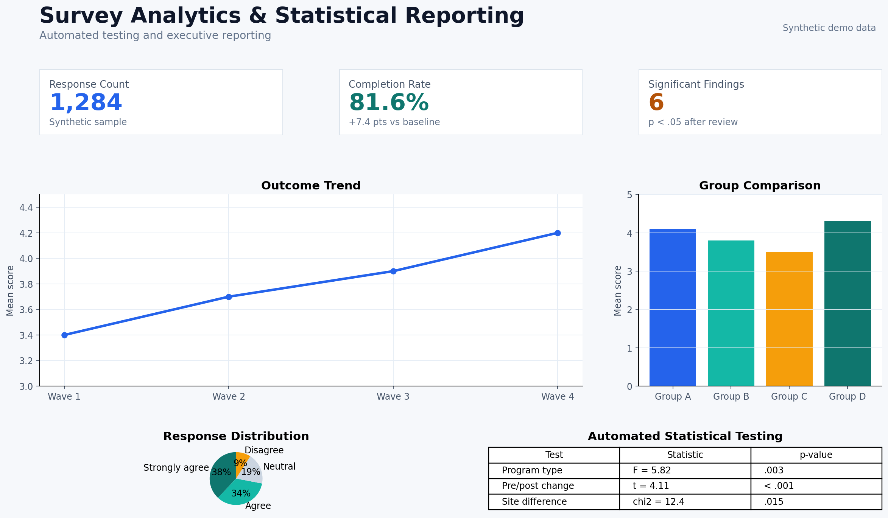
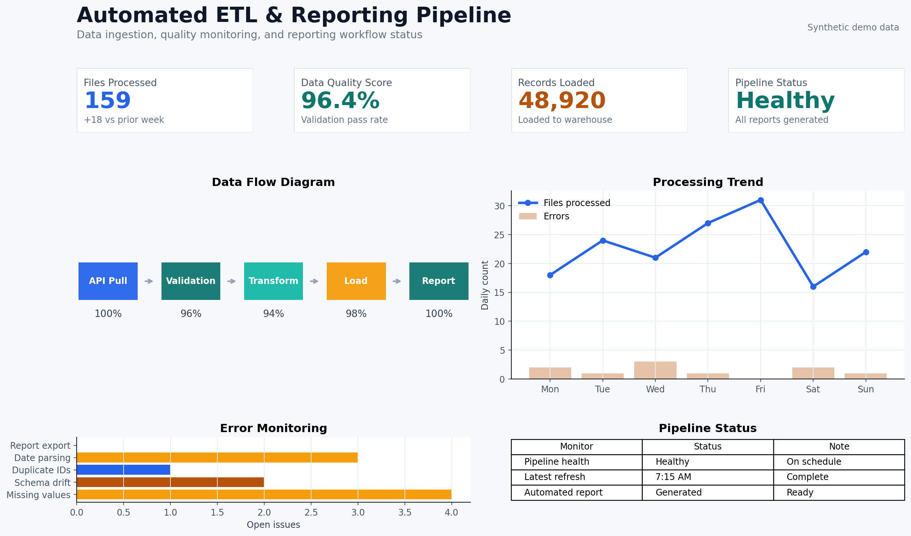

ProgramMetrics helps healthcare, government, nonprofit, research, and program teams move from manual reporting to interactive Python dashboards, automated analytics, and decision-support tools.

Practical analytics systems that combine dashboard development, ETL automation, statistical analysis, and executive-ready reporting.
Interactive dashboards using Python, Streamlit, Plotly, pandas, and custom analytics workflows.
Automated data cleaning, validation, transformation, and scheduled reporting pipelines.
Regression, hypothesis testing, chi-square, ANOVA, forecasting, and model interpretation.
Survey analysis, KPI frameworks, outcome measurement, and evidence-based evaluation reporting.
Legacy statistical workflows translated into modern Python analytics and automation systems.
Forecasting, risk scoring, segmentation, model diagnostics, and decision-support analytics.
Many organizations have data, but not a usable analytics system. ProgramMetrics focuses on turning scattered, messy, or manual reporting processes into reliable tools people can use.
Example dashboard concepts using synthetic or de-identified demo data.
Forecasting, KPI tracking, risk segmentation, model fit, and driver analysis.
Python Forecasting Statistics
Referral tracking, service connections, outcomes monitoring, and performance indicators.
Healthcare Analytics Program Evaluation KPI Tracking
Automated statistical testing, subgroup comparison, survey summaries, and executive reporting.
Survey Analysis Statistical Testing Reporting
Automated extraction, transformation, validation, and reporting workflows built in Python.
ETL Automation PythonPricing depends on data complexity, number of sources, modeling needs, and reporting requirements.
Interactive Python dashboard using provided data files and defined KPIs.
Dashboard with statistical analysis, forecasting, subgroup comparisons, or predictive modeling.
Automated pipelines, data validation workflows, recurring reports, and dashboard-ready datasets.
ProgramMetrics is led by Suzanne Landram, PhD, an applied statistician, program evaluator, and analytics consultant specializing in Python dashboards, statistical modeling, program evaluation, and automated reporting.
The focus is practical: build tools that help teams understand what changed, why it matters, and what to do next.
Most dashboards show what happened. ProgramMetrics helps explain what changed, what matters statistically, and how decision-makers can act on the results.
Reach out to discuss Python dashboards, statistical analysis, ETL automation, survey analytics, or SAS/SPSS/R to Python conversion.
slandram@gmail.com